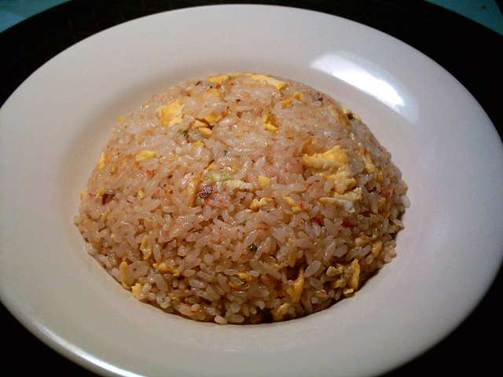

Chicken Fried Rice

Description
This recipe will teach you how to make delicous chicken fried rice. It is very easy to make with simple
ingrediants and doesn't take that long to make. The first time you try this recipe, you will be blown away by
how good it tastes and you will definetely want to eat it again in the future.
Ingredients
- Rice
- Onions
- Zucchini
- Chicken
- Eggs
- Soy Sauce
- Sesame Seeds
Steps
- First you want to use old rice, typically from a couple days ago that you put in the fridge or the freezer.
If you don't then making fresh rice is fine but it may not taste as good.
- Next you want to chop and dice the zucchini, onions, and chicken.
- Then crack a couple eggs into a bowl and mix thoroughly.
- In a pan add the zucchini and onions to cook them.
- Once the onions become clear and the zucchini has a nice char, add the chicken to cook.
- Once the chicken is cooked, create a small circle in the pan to cook the eggs seperately so they don't mix
with the other ingrediants.
- Once the eggs are cooked, mix them with the other ingrediants and add the rice.
- Finally, add the soy sauce and sesame seeds to taste.
Home